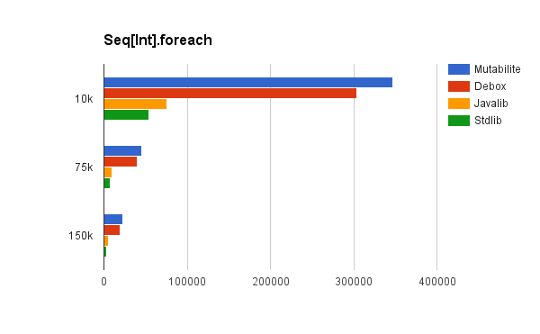

mutabilite provides fast mutable collections that are guaranteed to never allocate boxed values.
The library is very similar to Debox. It provides the same set of collections: Seq(Buffer), Set and Map (using same hashing scheme).
One of the most significant differences is that mutabilite uses code generation instead of relying on Scala specialization. This means that mutabilite is less convenient to use, but on the other hand it's also free from many specialization quirks, like all-or-nothing semantics of specialized parameters, which means that you can't have Map[Int, String] without boxing both keys and values.
On top of that mutabilite implements high-level methods like map or filter using macros that help to reduce amount of generated code necessary to support all possible input and output type combinations. In addition macros will inline given closures giving slight performance benefit to those operations.
Features
- No boxing when using primitives mixed with reference types (like in Map[Int, String])
- Lightweight - whole library weighs about 500kB (vs. 15MB of debox + spire dependency)
- Macros for higher-order functions that inline given closures
- Specialized interfaces that guarantee that you don't box
To start using mutabilite, import the following dependency into your SBT project:
libraryDependencies += "org" %% "name" % "0.1.0"
To get started, import the following package:
import mutabilite._
This will provide you all specialized implementations of collections and typeclasses that are necessary to work with the library.
Each collection in the library has its own generic interface, which are defined in mutabilite.generic package. It's recommended to not use them directly (they are mostly useful for macros), since operations using these interfaces will always box.
The convention used for naming specialized types is to add primitive type or "object" separated by underscore to denote types for which it is specialized.
For example: Seq_Char, Map_Int_Object[String]
Example
val seq = new BufferSeq_Int
seq.append(1)
seq.append(2)
seq.append(3)
val strings = seq map (_ toString)
val map = seq zipToMap strings
map(2) == "2"
val sum = map reduceKeys (_ + _)
sum == 6
The library has been thoroughly benchmarked using JMH framework. Each benchmark method focuses on concrete use case - like adding a number of elements to a set or looking up a value in map.
Comparing to Scala's standard library mutable collections, you can expect mutabilite to be 2-40x faster for most common operations. For detailed benchmark results look into the following gist: https://gist.github.com/adamwy/bab182753ea8bfbabe94eeb072e8fdc3
The following charts present the benchmarks results (throughput vs number of elements) for operations on specialized and mixed collections. It compares mutabilite to collections from Debox, Scala and Java standard library. For map benchmarks Scala OpenHashMap is used, since it is is based on similar underlying hash table implementation.
Seq[Int]
|  | |
 | |
Set[Int]
Map[Int, Int]
Map[Int, String]
0.1.0
- First release.